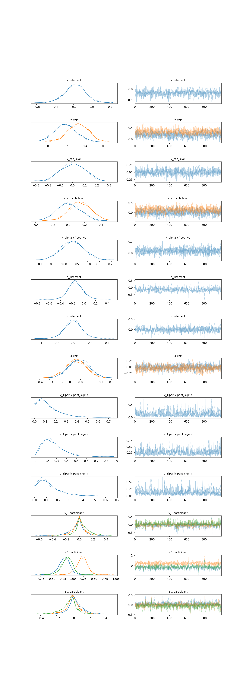
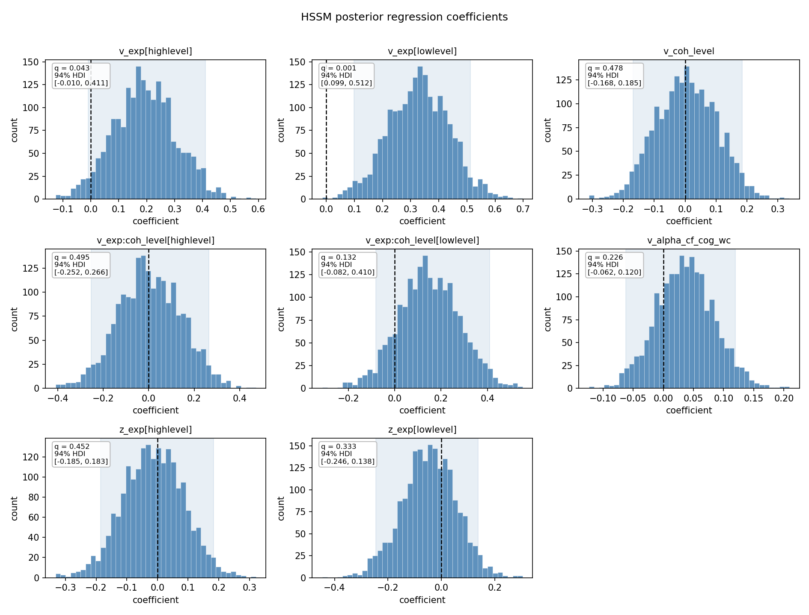
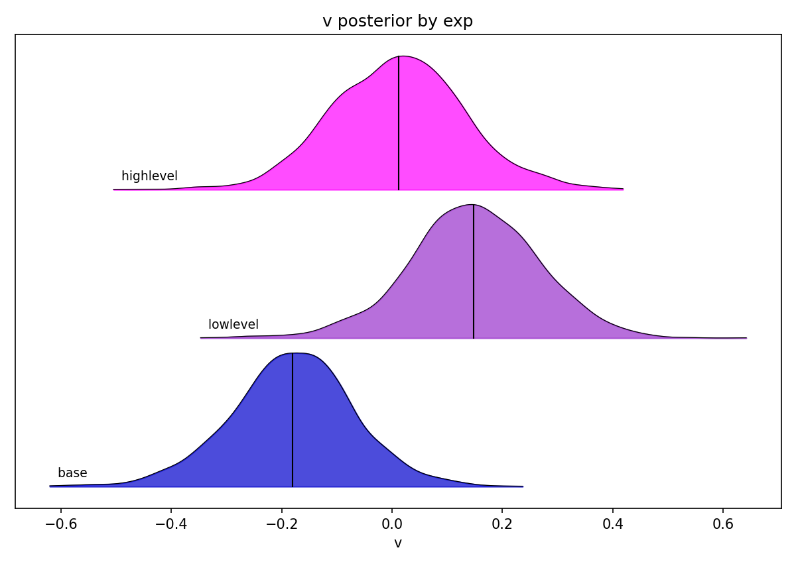
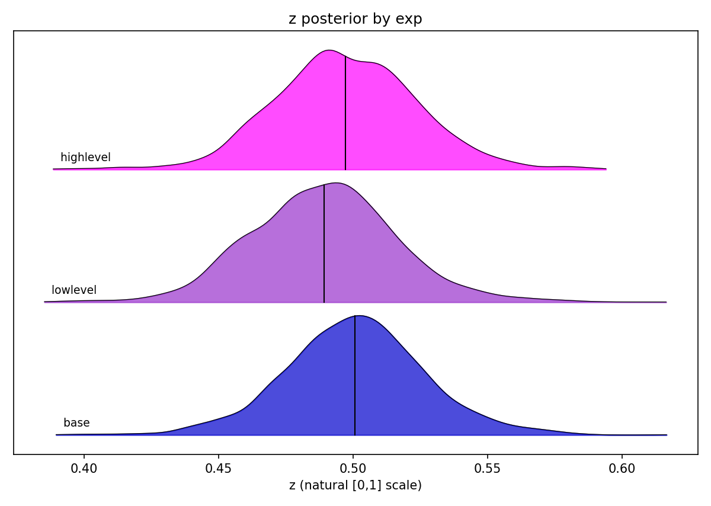
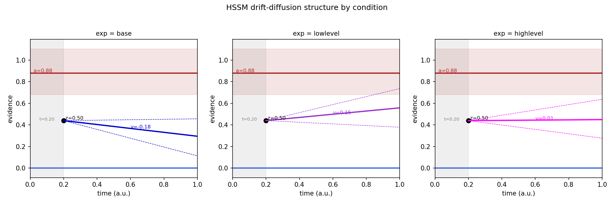

This note walks through every figure the pipeline now produces for the Hierarchical
Bayesian drift-diffusion model (HSSM). For each plot you get the picture, what it is,
how to read it, what it shows in our demo data, and which paper it is modelled on.
The plotting code lives in plotting_module.py (functions prefixed hssm_) and is called
from e_HSSM_module.py after the model is fit. The fitted posterior is also saved to
hssm_idata.nc, so any of these can be regenerated without re-running the multi-minute
fit (see Regenerating the figures at the end).
See also: ./02-paper-summaries.md (the source papers) and
./04-hssm-questions.md (open modelling decisions).
⚠️ Read this first: these are DEMO numbers, not findings
Everything below was fit on the 3-subject demo dataset (the Hierarchical-Priors
random-dot-kinematogram (RDK) task). With n = 3, the figures exist to prove the
plumbing works — that the model fits, converges, and plots correctly. Do not
interpret any effect as a scientific result. A rule of thumb: don't read tea leaves
below ~10 observations. The value here is the machinery; it carries straight over to
the full dataset and to the Natural-Uncertainty study.
A DDM is a model of a single two-choice decision. The idea: when a stimulus appears,
the brain accumulates noisy evidence over time. That running total is a point that drifts
up or down until it hits one of two boundaries — and which boundary it hits is the
choice, how long it took is the reaction time (RT). One model therefore explains both
accuracy and RT at once, and it decomposes them into psychologically meaningful pieces.
The four standard DDM parameters — keep this table handy, every plot refers to them:
| Symbol | Name | Plain meaning | Where it shows up |
|---|---|---|---|
| v | drift rate | Quality/speed of evidence. How fast (and which way) the evidence accumulates. High v = easy, fast, accurate; v near 0 = guessing; sign = which option the evidence favours. |
the slope of the line in the schematic |
| a | boundary separation (a.k.a. threshold) | Caution. The gap between the two decision boundaries. Wider a = more evidence required = slower but more accurate (the speed–accuracy trade-off). |
the red top line in the schematic |
| z | start point (bias) | Pre-evidence bias. Where accumulation begins between the boundaries. z = 0.5 is neutral; z shifted toward one boundary means you lean that way before seeing the stimulus. |
the black dot in the schematic |
| t | non-decision time | Everything that isn't deciding — sensory encoding + motor execution. A flat offset added to every RT. | the grey band in the schematic |
The key conceptual split (this is the whole point of the modelling):
v is an in-evidence bias — the prior tilts the accumulation itself.z is a pre-evidence bias — the prior moves the starting line before anyTwo very different stories produce similar behaviour, and the DDM is what lets us tell
them apart. Jonathan's working hypothesis: the low-level prior moves z (start
point), while v is driven by both the prior and the EEG alpha signal. That is
exactly why the model below puts the experimental factor on both v and z.
We fit the model in a Bayesian way, which means the answer for each parameter is not a
single number but a whole distribution — the posterior — that says how plausible each
value is given the data. Three terms recur in the plots:
q ≈ 0.002 means only 0.2% of the samples cross zero — a credibly directional effect;q ≈ 0.5 means the posterior straddles zero and we can't even call its sign.The demo was fit with these formulas (from inputs.json, Analysis.hssm):
v ~ 1 + exp * coh_level + alpha_cf_cog_wc + (1|participant)
z ~ 1 + exp + (1|participant)
a ~ 1 + (1|participant)
t = 0.2 (fixed)
How to read those formulas:
exp is the experimental factor — the prior condition — with three levels: base,base is the reference level.)coh_level is motion coherence (the RDK difficulty). exp * coh_level includesalpha_cf_cog_wc is the per-trial EEG alpha covariate — this is where the brain(1|participant) is a random intercept: each subject gets their own baseline offset,t is fixed at 0.2 rather than estimated (a deliberate choice — see./04-hssm-questions.md). That is why t is a flat grey band,A regression posterior stores an intercept plus per-level offsets, not one value per
condition. A condition's value is reconstructed by summing: base = intercept,
lowlevel = intercept + lowlevel_offset, and so on. The ridgeline and schematic functions
do exactly this reconstruction.
hssm_trace.png 
What it is. An MCMC convergence diagnostic — the most important sanity check before
you trust anything else. Markov-chain Monte Carlo (MCMC) is how we draw posterior
samples: each chain is a random walk that should settle into the posterior and explore it.
This plot shows, for every model variable, one row with two panels:
How to read it.
hssm_posterior_summary.csv): you wantWhat it shows in our demo data. Fourteen rows — the slope/intercept coefficients
(v_Intercept, v_exp, v_coh_level, v_exp:coh_level, v_alpha_cf_cog_wc,
a_Intercept, z_Intercept, z_exp), the random-effect spreads (*_1|participant_sigma)
and the per-subject offsets (*_1|participant). The traces are all fuzzy caterpillars and
the chains overlap, so sampling behaved. (Numbers themselves are demo-scale; this plot is
about whether we can believe the sampler, not about effects.)
What changed this session. This replaced the cramped default az.plot_trace, which
crammed ~15 variables with no spacing so the titles collided with the axis above. The fix:
scale the figure height to the number of variables, drop the redundant non-centered
_offset duplicates (a sampling reparameterisation, not a quantity you interpret), add
row spacing, and shrink the titles. (hssm_trace in plotting_module.py.)
Modelled on. No specific paper — this is the standard ArviZ trace diagnostic, just made
legible.
hssm_posterior_coefficients.png 
What it is. The recreation of Romei & Tarasi (2026), Fig 4C. One histogram per
regression coefficient (the slopes/offsets, not the bare parameters), showing that
coefficient's full posterior. Each panel has a dashed vertical line at 0, a shaded
HDI band, and a text box with q (probability of direction) and the 94% HDI.
The function auto-discovers which variables to plot: it keeps the slope-like
coefficients and skips intercepts, the _sigma spreads, the _offset
reparameterisations, the random-effect terms (1|...), and the bare scalar parameters
(a, t, z) — for those a "line at zero" isn't the question.
How to read it.
What it shows in our demo data (8 panels):
| Coefficient | What it asks | q (shown) | 94% HDI | Read |
|---|---|---|---|---|
v_exp[lowlevel] |
does the low-level prior change drift vs base? | 0.001 | [0.099, 0.512] | almost entirely above 0 → credibly positive drift |
v_exp[highlevel] |
high-level prior vs base on drift | 0.043 | [-0.010, 0.411] | mostly positive, HDI just grazes 0 |
v_coh_level |
does coherence change drift? | 0.478 | [-0.168, 0.185] | straddles 0 (demo data, no effect resolved) |
v_exp:coh_level[highlevel] |
prior × coherence interaction | 0.495 | [-0.252, 0.266] | straddles 0 |
v_exp:coh_level[lowlevel] |
prior × coherence interaction | 0.132 | [-0.082, 0.410] | leans positive, not credible |
v_alpha_cf_cog_wc |
does EEG alpha predict drift? | 0.226 | [-0.062, 0.120] | right direction, straddles 0 at n=3 |
z_exp[highlevel] |
high-level prior on start point | 0.452 | [-0.185, 0.183] | straddles 0 |
z_exp[lowlevel] |
low-level prior on start point | 0.333 | [-0.246, 0.138] | leans negative (lower z), not credible |
The headline pattern (remember: machinery demo) is that the prior shows up on the drift
rate — v_exp[lowlevel] is the one coefficient credibly off zero. The alpha→drift
coefficient (v_alpha_cf_cog_wc) points the expected way but, with only 3 subjects, its
posterior comfortably includes zero (q ≈ 0.23). That is the expected outcome of an
underpowered demo, not a null result.
Modelled on. Romei & Tarasi (2026), Fig 4C — posterior-coefficient histograms with
a zero reference. See ./02-paper-summaries.md.
hssm_ridgeline_v_by_exp.png 
What it is. A ridgeline plot in the style of Franzen et al. (2025), Fig 5:
stacked posterior densities (kernel-density estimates, KDEs) of the drift rate v,
one curve per exp condition (base, lowlevel, highlevel). Each condition's draws are
reconstructed from the regression (base = v_Intercept;
lowlevel = v_Intercept + v_exp[lowlevel]; etc.), with the other covariates held at their
centred mean of 0. The short vertical line in each curve marks the posterior mean.
How to read it. Read left–right position, not height. A curve sitting further right
= higher drift toward the upper boundary. Compare the whole distributions, not just the
means: heavy overlap between two curves means the conditions aren't cleanly separated. The
strength of a ridgeline (over three error bars) is that you see the entire posterior
shift between conditions.
What it shows in our demo data. The three curves are clearly offset:
So the low-level prior pushes the drift positive relative to base — the same story as the
credible v_exp[lowlevel] coefficient in plot #2, now shown as a full distribution. (Still
n = 3; the curves overlap a lot.)
Modelled on. Franzen et al. (2025), Fig 5 — condition ridgelines. See
./02-paper-summaries.md.
hssm_ridgeline_z_by_exp.png 
What it is. The same Franzen-style ridgeline, but for the start point z across
exp conditions. This figure only exists because of the "Option A" change that put the
experimental factor on z (z ~ 1 + exp + (1|participant)) — see Q6 in
./04-hssm-questions.md. Before that change, z had no condition
structure to plot.
Crucial detail — the x-axis is the natural [0, 1] scale. HSSM fits z on a logit
scale (so the optimiser can roam over all real numbers while z stays a valid
probability between 0 and 1). The plotting function applies the inverse logit / expit
to map the samples back to the interpretable [0, 1] start-point scale. Skipping that
back-transform would be a silent bug — the curves would plot, just in the wrong units.
The axis label z (natural [0,1] scale) is your reminder it was done.
How to read it. z = 0.50 is an unbiased start point (dead centre between
boundaries). A curve shifted left of 0.50 = start point biased toward the lower
boundary; right of 0.50 = biased toward the upper boundary.
What it shows in our demo data. All three curves sit near 0.50 — start-point biases
are small here. lowlevel is nudged slightly left of base (a touch lower z);
highlevel is essentially on top of base. That is the (badly underpowered) hint that
the low-level prior nudges the starting line — consistent with Jonathan's z ~ low-level prior anchor — but the shift is tiny and the curves overlap almost completely. Do not
read this as evidence at n = 3; it is here to show the z-by-condition machinery works.
Modelled on. Franzen et al. (2025), Fig 5 (same ridgeline function as plot #3,
link='logit').
hssm_ddm_schematic.png 
What it is. The cleaned-up "anatomy of a drift-diffusion model" cartoon — one panel
per exp condition (base, lowlevel, highlevel) — built from the fitted posterior. It is
the picture that makes the four parameters concrete. (Adapted and corrected from a
conference colleague's DDM_Plots_functions.py.)
How to read it — every element maps to a parameter from the table at the top:
a (here a ≈ 0.88); the faint red band is itsv for that condition; the dashedt (fixed at 0.20) — the pre-decisionReading the three panels: in base the drift line slopes down (v = -0.18, toward
the lower boundary); in lowlevel it slopes up (v = 0.15); in highlevel it is
nearly flat (v = 0.01). The boundary a, the start dot, and t are shared across
panels — in this model only v (and z, not visualised here) carry the condition factor,
so a and the start point repeat.
Two bugs were fixed versus the original (this is the load-bearing part):
z is relative, in [0, 1]. The original drew the start dot at the rawz (~0.50). But a relative z must be multiplied by the boundary to get its absolutez · a (≈ 0.50 × 0.88 ≈ 0.44), not at 0.50. The labelz = 0.50 (the relative value) but the dot now sits at the correct absolutev for each condition.One more transform to know: a is fit on a log scale internally, so the code
back-transforms it with exp() before drawing — same family of "apply the inverse link"
care as the expit for z in plot #4.
Modelled on. Adapted (and corrected) from a conference colleague's
DDM_Plots_functions.py — a generic DDM-anatomy cartoon, not a specific paper figure.
You don't need to refit the model to redraw these. The fit is fast to plot from the
saved posterior because e_HSSM_module.py writes hssm_idata.nc (an ArviZ
InferenceData in NetCDF) next to the figures. In a quick script:
import arviz as az
import plotting_module as plotting # needs inputs.json as sys.argv[1] to import
idata = az.from_netcdf('.../results/groupBehavioral/.../hssm_idata.nc')
condition_dict = {"exp": ["base", "lowlevel", "highlevel"]}
result_dir = "."
plotting.hssm_trace(idata, result_dir)
plotting.hssm_posterior_coefficients(idata, result_dir)
plotting.hssm_posterior_ridgeline(idata, 'v', 'exp', condition_dict['exp'], result_dir, link='identity')
plotting.hssm_posterior_ridgeline(idata, 'z', 'exp', condition_dict['exp'], result_dir, link='logit')
plotting.hssm_ddm_schematic(idata, condition_dict, result_dir, t_value=0.2)
Each function follows the module convention: build/locate a save dir, savefig, close,
and log. They are all driven by condition_dict, so they carry over unchanged to the
Natural-Uncertainty dataset once its conditions are wired in.
./02-paper-summaries.md — Romei & Tarasi (2026) and Franzen./04-hssm-questions.md — open modelling decisions, includingt is fixed and the z ~ exp ("Option A") change behind plot #4 (Q6).docs/learning/14-hssm-posterior-plots.md — the teaching note written when these